王丽坤前夫诈骗案今日开庭 曾诸多女星巨额转账
搜狐娱乐讯 8月8日，王丽坤老公学区房诈骗案在北京开庭审理。据八卦媒体爆料，王丽坤前夫詹浩礼曾以低价销售学区房为幌子，诈骗近200户家庭将近9亿购房款，前年年底才落网。
据悉，有娱乐博主爆料女星贾青曾与王丽坤前夫詹浩礼谈过恋爱，后来贾青发现詹浩礼“有问题”离开了他，但在2018年詹浩礼先后转给贾青将近120万巨款，这笔钱来自詹浩礼学区房诈骗案之前的另一起诈骗案，据说涉案金额很大，该案件也将开庭审理。
除了贾青外，爆料人称詹浩礼实施学区房诈骗得手后，还给女星赵韩樱子转账120万，具体原因不得而知。
王丽坤老公诈骗案牵连甚广！给女星打过钱，还要帮某冰复出
王丽坤老公詹某诈骗案一事又有新的爆料了！有知情人曝光了王丽坤前夫诈骗案的部分内情，牵扯到多个女星，引起网友热议。
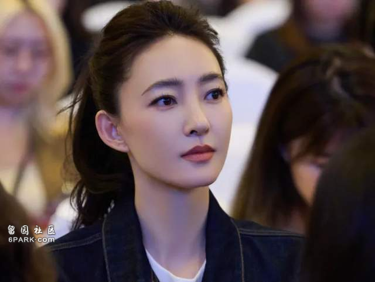
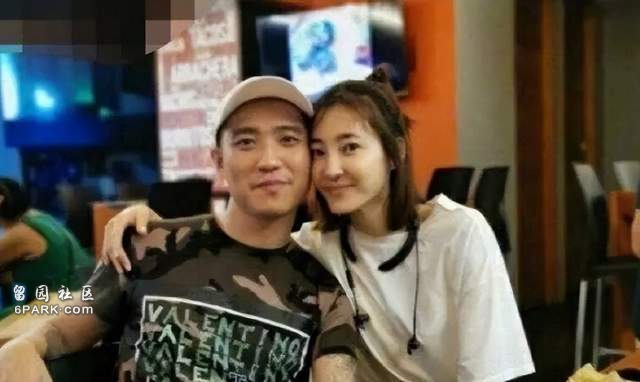
此前有人放出了詹某母亲的对话录音，彻底曝光了王丽坤的婚姻状态，王丽坤是否真的花了赃款的问题也再度引起网友讨论。可能是有知情人看不下去了，出来爆料了一堆猛料，甚至牵扯到另外三位女星，还直言王丽坤在婚内并没有得到好处，要真仔细算一算，反而詹某还倒欠王丽坤几十万，据报道两人的婚姻已经是离婚状态了。
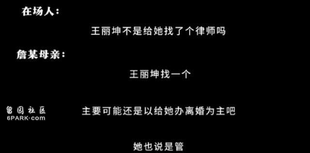
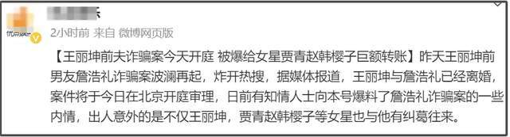
这位知情人的身份还不得而知，但对王丽坤和王丽坤老公的事可以说是一清二楚，王丽坤老公婚前婚后给谁打过钱，知情人都了如指掌。
知情人称詹某早有诈骗前科，还曾因此入狱，出来之后混迹娱乐圈，但还继续招摇撞骗。后来和王丽坤结婚之后依旧诈骗，金额将近9亿，一直到2022年年底才落网，案件于近日开庭审理。
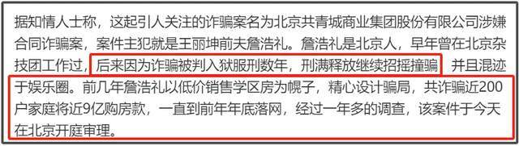
据知情人所说，詹某被抓之后，王丽坤也配合调查了，但王丽坤本人对詹某的行为一无所知。詹某自己名下有豪车豪宅，但并没有给王丽坤买车买房。而两人之间也有过转账，王丽坤给詹某转的比较多，甚至多出数十万来，看起来好像这个人还得靠老婆养。
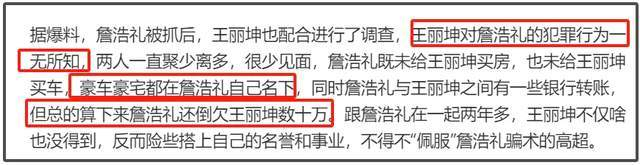
那么詹某的钱都哪去了呢？之前有受害者发文喊话王丽坤还钱，认为她的婚内财产有一部分就是赃款，甚至表示王丽坤也花了赃款这点确证无疑。
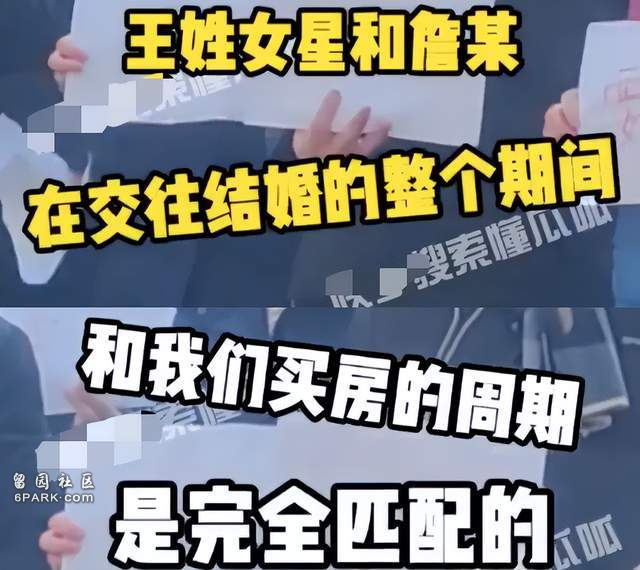
但如今知情人爆料了部分钱款的去向。知情人称詹某之前和女演员贾青是恋人关系，给贾青转过将近120万，而这笔钱来自詹某的另一起诈骗案。在和王丽坤婚后犯下的这起诈骗案期间，詹某还给女星赵韩樱子（赵樱子）转过120万，至于詹某和女星赵樱子是什么关系，为什么要给她转钱，知情人似乎也不太清楚。
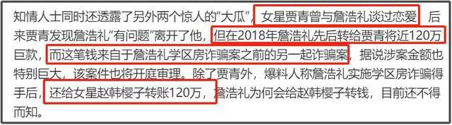
从知情人的爆料来看，王丽坤虽然和詹某曾是夫妻关系，但对他却并不了解，在干什么，给别人打钱干什么？统统不知道。也不知道两人到底是在什么情况下认识并结婚的呢？
不过诈骗款将近9亿，就算转给过赵樱子也才120万，还有好几亿的资金不见去向，之前受害人就喊话王丽坤希望她能帮忙让詹某坦白6亿钱款的去向，有些老人还因诈骗的打击而去世。王丽坤方当时发声明称王丽坤没有损害过任何人合法权利，但更多的事情则并没有多说了。
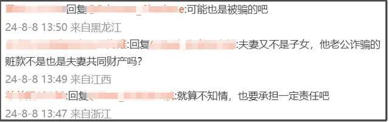
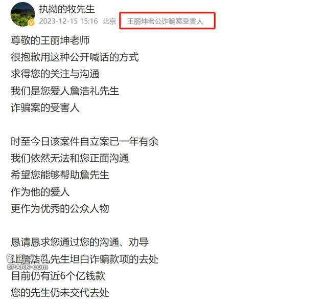
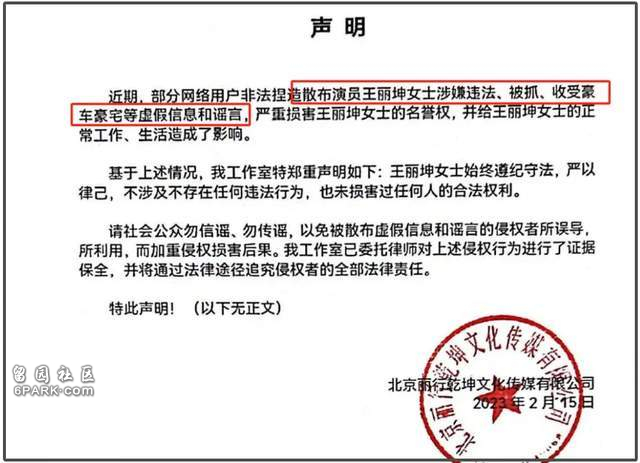
据说这位詹某还是娱乐圈内的“大佬”，喜欢追求女明星，人称“欧阳”，甚至还和范某冰见过面，表示能帮她复出。还投资过之前大热的电视剧《人世间》，是这部剧的联合出品人之一。就在他被抓之前还成立了影视公司，不知道是为了妻子王丽坤考虑，还是另一种新型骗局。
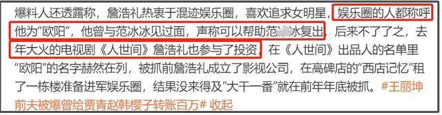
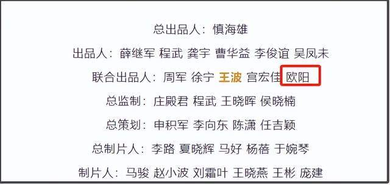
有网友说詹某已经是王丽坤前夫了，就不要捆绑王丽坤上热搜了。但也有网友表示，出事的时候两人还是夫妻关系呢，出事后才离婚。还呼吁王丽坤出来回应，如果真的没花钱，那完全可以出面澄清，就不用被前夫捆绑，被网友关注了。
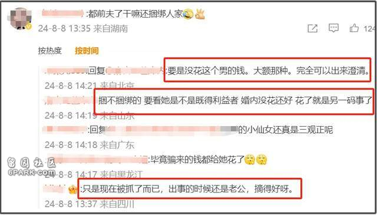
不得不说，娱乐圈是真乱啊，女星嫁富豪虽然很常见，但嫁给有诈骗前科的富豪也是第一次听说，只能说希望女星们擦亮眼睛吧。如今案件已经开庭审理，也希望受害者们能够早日维权成功。